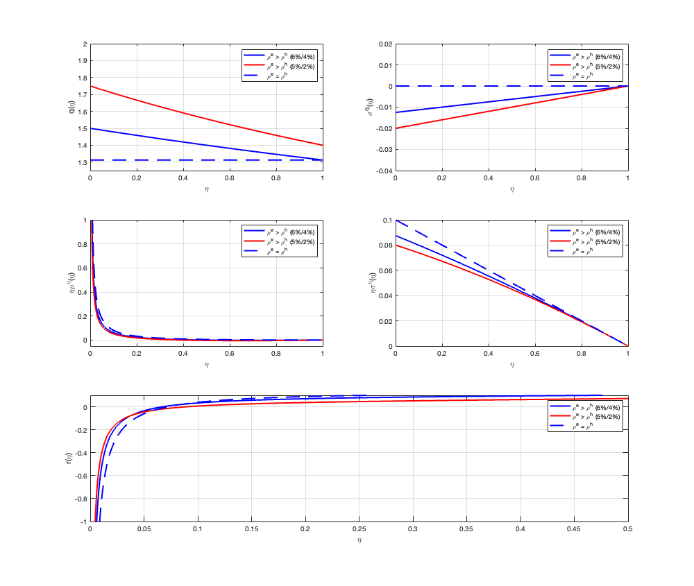

phi = 10;
a_e = 0.11;
sigma = 0.10;
delta = 0.035;
eta = linspace(0.001, 0.999, 1000);
param_sets = [0.06 0.04;
0.05 0.02];
colors = {'b-', 'r-'};
figure('Position', [100 100 1000 1000]);
for i = 1:2
rho_e = param_sets(i,1);
rho_h = param_sets(i,2);
rho_hat = rho_e .* eta + rho_h .* (1 - eta);
A = phi * (rho_e - rho_h) ./ (1 + phi .* rho_hat);
q = (1 + phi * a_e) ./ (1 + phi .* rho_hat);
iota = (a_e - rho_hat) ./ (1 + phi .* rho_hat);
sigma_q = -(1 - eta) .* ((phi * (rho_e - rho_h)) ./ (1 + phi*rho_e)) .* sigma;
eta_sigma_eta = (1 - eta) .* (1 + phi .* rho_hat) ./ (1 + phi*rho_e) .* sigma;
drift_term = -(rho_e - rho_h) .* eta .* (1-eta);
vol_term = ((1 - eta).^2 ./ eta) .* ((1 + phi .* rho_hat) ./(1 + phi * rho_e)).^2 * sigma^2;
eta_mu_eta = drift_term + vol_term;
r = rho_hat + a_e - iota + A .* eta_mu_eta + A.^2 .* (eta_sigma_eta).^2 + sigma .* sigma_q - (sigma + sigma_q).^2 ./ eta;
subplot(3,2,1), plot(eta, q, colors{i}, 'LineWidth', 2); hold on;
subplot(3,2,2), plot(eta, sigma_q, colors{i}, 'LineWidth', 2); hold on;
subplot(3,2,3), plot(eta, eta_mu_eta, colors{i}, 'LineWidth', 2); hold on;
subplot(3,2,4), plot(eta, eta_sigma_eta, colors{i}, 'LineWidth', 2); hold on;
subplot(3,2,[5,6]), plot(eta, r, colors{i}, 'LineWidth', 2); hold on;
end
rho_eq = 0.06;
q_eq = (1 + phi * a_e) / (1 + phi * rho_eq) * ones(size(eta));
sigma_q_eq = zeros(size(eta));
eta_sigma_eta_eq = (1 - eta) * sigma;
eta_mu_eta_eq = ((1 - eta).^2 ./ eta) .* sigma^2;
iota_eq = (a_e - rho_eq) / (1 + phi * rho_eq);
r_eq = rho_eq + a_e - iota_eq - sigma^2 ./ eta;
subplot(3,2,1), plot(eta, q_eq, 'b--', 'LineWidth', 2);
subplot(3,2,2), plot(eta, sigma_q_eq, 'b--', 'LineWidth', 2);
subplot(3,2,3), plot(eta, eta_mu_eta_eq, 'b--', 'LineWidth', 2);
subplot(3,2,4), plot(eta, eta_sigma_eta_eq, 'b--', 'LineWidth', 2);
subplot(3,2,[5,6]), plot(eta, r_eq, 'b--', 'LineWidth', 2);
subplot(3,2,1)
xlabel('\eta'), ylabel('q(\eta)')
legend('\rho^e > \rho^h (6%/4%)', '\rho^e > \rho^h (5%/2%)', '\rho^e = \rho^h', 'Location', 'northeast')
grid on, ylim([1.25 2])
subplot(3,2,2)
xlabel('\eta'), ylabel('\sigma^q(\eta)')
legend('\rho^e > \rho^h (6%/4%)', '\rho^e > \rho^h (5%/2%)', '\rho^e = \rho^h', 'Location', 'northeast')
grid on, ylim([-0.04 0.02])
subplot(3,2,3)
xlabel('\eta'), ylabel('\eta\mu^\eta(\eta)')
legend('\rho^e > \rho^h (6%/4%)', '\rho^e > \rho^h (5%/2%)', '\rho^e = \rho^h', 'Location', 'northeast')
grid on, ylim([-0.05 1])
subplot(3,2,4)
xlabel('\eta'), ylabel('\eta\sigma^\eta(\eta)')
legend('\rho^e > \rho^h (6%/4%)', '\rho^e > \rho^h (5%/2%)', '\rho^e = \rho^h', 'Location', 'northeast')
grid on, ylim([0 0.1])
subplot(3,2,[5,6])
xlabel('\eta'), ylabel('r(\eta)')
legend('\rho^e > \rho^h (6%/4%)', '\rho^e > \rho^h (5%/2%)', '\rho^e = \rho^h', 'Location', 'northeast')
grid on, ylim([-1 0.1])
xlim([0 0.5])
